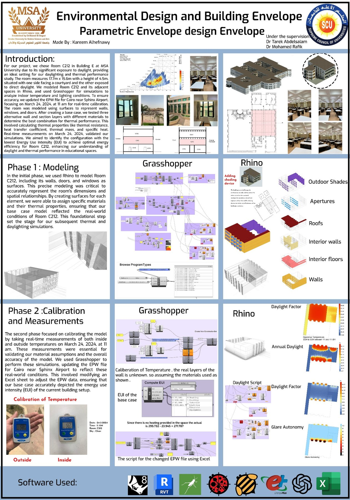
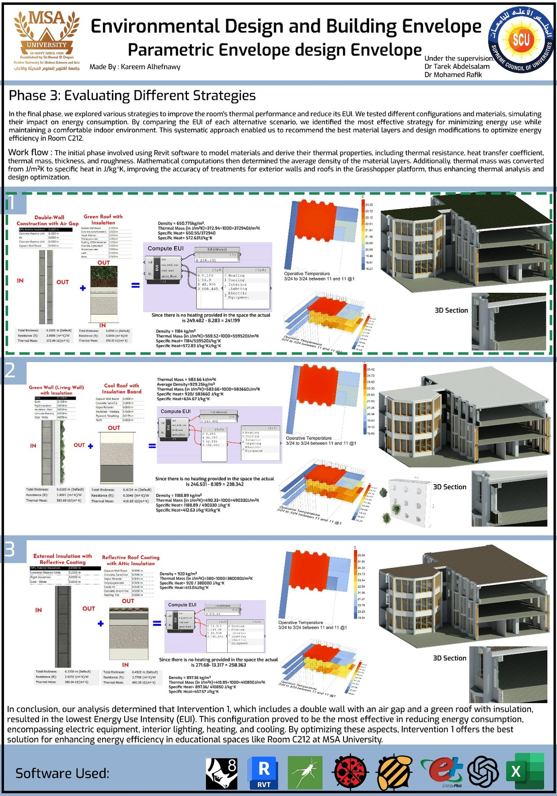

/ TEACHING — POST-GRADUATE SEMINAR
The building envelope,
read as a climate system.
A post-graduate seminar that treats the building envelope — walls, roof and openings — as the primary mediator between climate and comfort. Students examine how an assembly can be designed to lower energy demand and shape indoor conditions, rather than left to be corrected by mechanical systems after the fact.

/ OVERVIEW
The skin, doing the work.
The envelope is where a building meets its climate. This seminar asks students to treat that boundary as an active system — setting how much heat, light and air move across it — and to design it deliberately rather than default to a standard wall and let the plant compensate.
Sessions move across the terms that govern envelope performance: orientation and shading, insulation and thermal mass, glazing and daylight, moisture, and the environmental cost of the materials and assemblies chosen. Each student then carries the ideas into a project of their own, argued on boards.
Student project — Karim AlHefnawy
Karim’s study takes the seminar’s framework and works it through in full — from the synthesising diagram above into a pair of analytical boards that set out the envelope strategy, its performance logic and the way the parts assemble. The work below is entirely his own.

